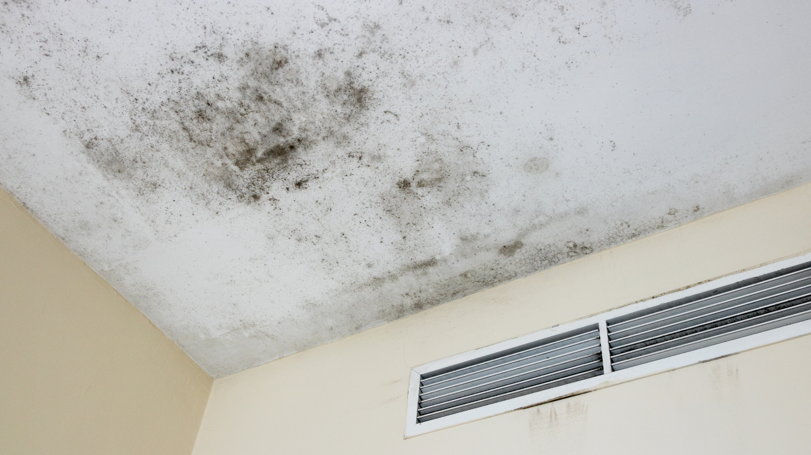

We provide professional mold remediation services that help families remove harmful mold safely while restoring healthier indoor conditions throughout the home.
Finding mold inside your home can quickly raise concerns about your family’s health and safety. Many homeowners wonder whether mold is simply a cosmetic issue or something more serious. The truth is that dangerous household mold can affect both property conditions and indoor air quality when moisture problems remain untreated. Understanding how mold impacts a home helps families respond quickly and protect their living environment.
Mold develops when moisture becomes trapped in enclosed spaces for extended periods. Leaks, humidity, storm damage, condensation, and plumbing failures all create conditions where spores can grow rapidly. Bathrooms, attics, crawl spaces, kitchens, and areas behind walls are common locations where mold begins spreading unnoticed.
Once moisture is present, mold can spread through porous materials such as drywall, insulation, carpeting, and wood framing. Homes with poor ventilation or unresolved water damage often experience recurring mold issues because moisture continues feeding contamination behind surfaces.
Even small visible patches may indicate larger hidden growth inside walls or beneath flooring. Professional inspections through experienced mold remediation services help determine how widespread the problem may be.
One of the biggest concerns surrounding mold is its impact on indoor air quality. As mold grows, it releases spores into the air that may circulate throughout the property, especially when HVAC systems are involved.
Some individuals are more sensitive to mold exposure than others. Children, older adults, and people with allergies, asthma, or respiratory conditions may experience stronger reactions in contaminated environments. Homeowners often notice musty odors, irritation, or discomfort long before visible mold becomes widespread.
Indoor air quality concerns increase when mold spreads into insulation, ventilation systems, or hidden structural spaces where contamination continues growing out of sight.
Visible discoloration is not always the first warning sign of mold. In many cases, homeowners notice indirect symptoms before discovering the actual source of contamination.
Common warning signs include:
Mold often spreads quietly in dark, damp areas, making professional moisture detection especially important after leaks or flooding. Fast inspection and water damage restoration help reduce the risk of contamination spreading further throughout the property.
Not all mold growth develops at the same rate or in the same conditions. Small surface-level contamination on tile or non-porous materials may remain isolated if moisture is corrected quickly. However, hidden mold behind walls or under flooring can spread extensively before homeowners realize the severity of the issue.
Long-term moisture exposure weakens structural materials and increases cleanup complexity over time. Mold affecting insulation, drywall, or wood framing often requires removal and replacement to fully eliminate contamination.
Another concern is cross-contamination during improper cleanup. Disturbing mold without containment may spread spores into unaffected rooms, worsening indoor air quality and increasing restoration needs.
Professional remediation focuses on safely removing contamination while correcting the moisture problem causing mold growth. The process usually begins with inspection and moisture mapping to locate hidden affected areas.
Containment barriers and HEPA air filtration systems help prevent spores from spreading during cleanup. Depending on the severity of contamination, damaged materials such as drywall, carpeting, or insulation may require removal.
Industrial drying equipment eliminates trapped moisture before reconstruction begins. Comprehensive restoration services help homeowners manage both cleanup and rebuilding under one team, creating a smoother recovery process.
Professional remediation also improves long-term prevention by addressing leaks, humidity, and ventilation concerns contributing to mold growth.
Health concerns are usually the first priority once mold is discovered. Families want reassurance that their home is safe and that contamination can be removed effectively. Clear communication during remediation helps homeowners understand what areas are affected and how cleanup will restore indoor conditions.
Another major concern is whether mold has spread beyond visible surfaces. Hidden contamination often surprises homeowners because mold may travel behind walls or beneath flooring without obvious warning signs.
Property damage is also a significant worry. Untreated mold can weaken drywall, flooring, cabinetry, and structural materials over time, leading to larger repair projects later if moisture remains unresolved.
Preventing mold growth starts with moisture control. Homeowners should address leaks quickly, maintain proper ventilation, and monitor indoor humidity levels regularly. Bathrooms, kitchens, attics, and laundry rooms benefit from strong airflow and routine inspections for dampness.
After storms or plumbing failures, immediate drying significantly lowers the risk of mold developing. According to the Environmental Protection Agency, controlling moisture is the most important step in preventing mold growth indoors.
Routine maintenance and fast response after water intrusion help homeowners avoid larger contamination issues later.
Mold problems rarely disappear without proper moisture control and remediation. Safe cleanup requires more than surface cleaning — it involves identifying hidden contamination, removing affected materials safely, and restoring healthy indoor conditions throughout the property.
If you’re looking for trusted help with dangerous household mold, SWAT Restoration provides professional mold remediation, water damage cleanup, and reconstruction services throughout North Texas. Our team identifies hidden moisture problems, contains contamination safely, and restores affected areas with clear communication from start to finish. When mold threatens your home and your family’s comfort, experienced restoration professionals help make recovery safer and less stressful.